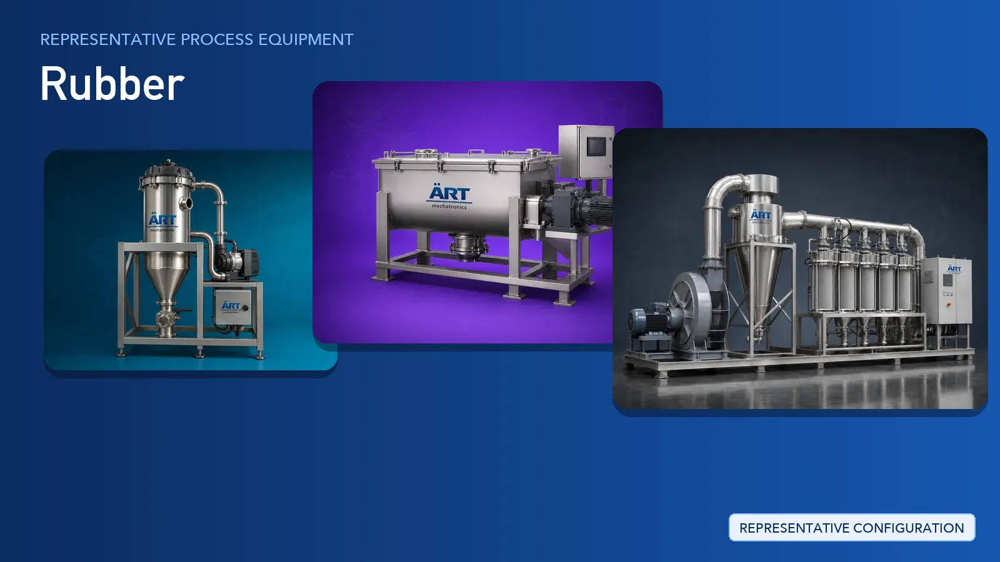

Rubber Industry Plant & Machinery Solutions (Tyres, Tubes, Seals, Gaskets, Gloves & More)
The rubber industry converts natural and synthetic rubber, carbon black, mineral fillers and process chemicals into products such as tyres, tubes, seals, gaskets, O rings, gloves, conveyor belts, mats and flooring.

About Rubber processing
ART Mechatronics supplies the process and utility equipment that feeds and supports rubber manufacturing plants: powder and filler intake, screening, weighing and dosing, dry pre-blending, mechanical and pneumatic conveying, material handling, dust and fume extraction, and plant automation. Compounding, moulding, curing and tyre-building machinery are outside our scope — our work is the upstream handling and environmental systems built around those lines.
Complete Rubber Process Flow
Bagged and bulk materials such as carbon black, mineral fillers, process chemicals and rubber crumb are received and tipped into the plant in a contained manner.
Keeps material intake contained and dust controlled at source.
Powders, granules and crumb are moved between intake, storage and downstream equipment through enclosed routes.
Ensures:
- Enclosed material transfer
- Reduced spillage and dust escape
- Continuous feed to downstream equipment
Incoming powders and recovered rubber crumb are screened to remove lumps, oversize particles and tramp metal before further use.
Protects downstream equipment and keeps material consistent.
Fillers, chemicals and additives are weighed to recipe and dry blended before they are handed over to the compounding line.
Supports:
- Recipe accuracy and repeatability
- Uniform distribution of fillers and additives
- Batch traceability
Scope note: ART Mechatronics supplies the dry-side handling, weighing and blending equipment only. Compounding, moulding, curing and tyre-building machinery are not part of our range.
Dust from powder handling, weighing and grinding areas, and fumes from downstream rubber processing, are captured at source and treated before discharge.
Ensures:
- Cleaner working environment
- Reduced carbon black and filler carry-over
- Support for pollution control compliance
Compounded stock, moulded components and finished rubber goods are moved between departments and floors, then packed and stacked for dispatch.
Reduces manual handling across the plant.
Intake, dosing, blending, conveying and extraction systems are interlocked and operated from a common control platform.
Provides recipe control, interlocks and process visibility.
Turnkey Rubber Plant Solutions
ART Mechatronics offers turnkey process and utility solutions for rubber manufacturing plants, including:
- Process design & layout for material handling areas
- Powder, filler and chemical handling systems
- Weighing, dosing and dry blending systems
- Mechanical and pneumatic conveying networks
- Dust extraction, fume extraction and pollution control systems
- Automation & control panels
- Packing and palletising line integration
- Installation & commissioning
- After-sales support
We customize solutions based on:
- Product type (tyres, tubes, seals, gaskets, gloves, belts, mats)
- Plant layout and available space
- Material types and dust characteristics
- Automation level
- Pollution control requirements
Why Choose ART Mechatronics for Rubber
- Specialists in powder, filler and bulk-solids handling
- Contained intake and enclosed conveying to control dust at source
- Dust and fume extraction engineered for the rubber plant environment
- Weighing, dosing and blending systems built for recipe repeatability
- Integrated automation across handling, blending and extraction
- Turnkey design, installation, commissioning and after-sales support
- Manufacturing and project support across India, UAE and Thailand
Where it's used
Get pricing & specs for the Rubber plant
Share the product, target capacity, current process and plant location. These details help our engineers discuss the right machine or line configuration.
One partner, from design to start-up
ART Mechatronics designs, manufactures, installs and commissions your Rubber plant solution with regional presence in India, UAE and Thailand.